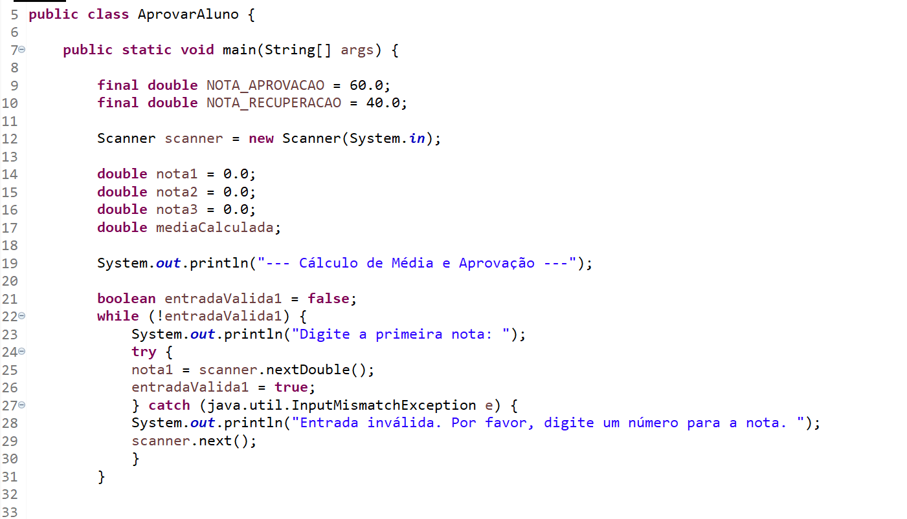

Sobre Mim
Olá! Sou o Hiago Brandão. Meu interesse por desenvolvimento de software surgiu durante algumas pesquisas sobre qual área seguir, me identifiquei muito com programação. Atualmente estou aprimorando meus conhecimentos em HTML, CSS, JavaScript e Java. Estou procurando uma oportunidade para ingressar em um trabalho como desenvolver de software.
Meus Projetos
Aqui você pode explorar alguns dos meus projetos e códigos que desenvolvi. Clique para ver mais detalhes e o código-fonte no GitHub!
Assistente de Meta para Jogos

Desenvolvi um Assistente de Meta interativo utilizando HTML, Tailwind CSS e JavaScript (Vanilla JS), integrando-o com a API Google Gemini (gemini-2.5-flash). A aplicação permite que usuários consultem estratégias, builds e dicas para jogos populares, convertendo as respostas da IA formatadas em Markdown para HTML. O projeto demonstra proficiência em desenvolvimento front-end, consumo de APIs de IA e design responsivo."
Ver no GitHubAprovar Aluno
Sistema de Cálculo de Média e Aprovação de Alunos em Java Este projeto simples em Java é uma aplicação de console que calcula a média de três notas fornecidas pelo usuário e determina o status de aprovação, recuperação ou reprovação de um aluno, com base em critérios predefinidos. Funcionalidades: Entrada de Notas: Solicita ao usuário que digite três notas. Cálculo de Média: Calcula a média aritmética das três notas inseridas. Determinação de Status: Aprovado: Se a média for igual ou superior a 60.0. Recuperação: Se a média for igual ou maior que 40.0 e menor que 60.0. Não Aprovado: Se a média for menor que 40.0. Validação de Entrada: Garante que o usuário insira apenas valores numéricos para as notas, tratando entradas inválidas com mensagens de erro amigáveis. Reutilização de Código: Implementa um método auxiliar para lidar com a entrada de dados, promovendo a reutilização de código e a legibilidade do programa.
Entre em Contato
Fico feliz em conectar! Se você tem uma oportunidade, uma pergunta ou apenas quer conversar sobre desenvolvimento, sinta-se à vontade para me contatar.
- Email: hiagoperspectiva@outlook.com
- LinkdIn: linkedin.com/in/hiago-brandão-a8a454372/
- GitHub: github.com/HiagoBrandao-dev
- Whatsapp: whatsapp/hiago brandão